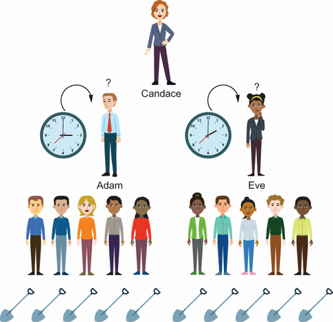
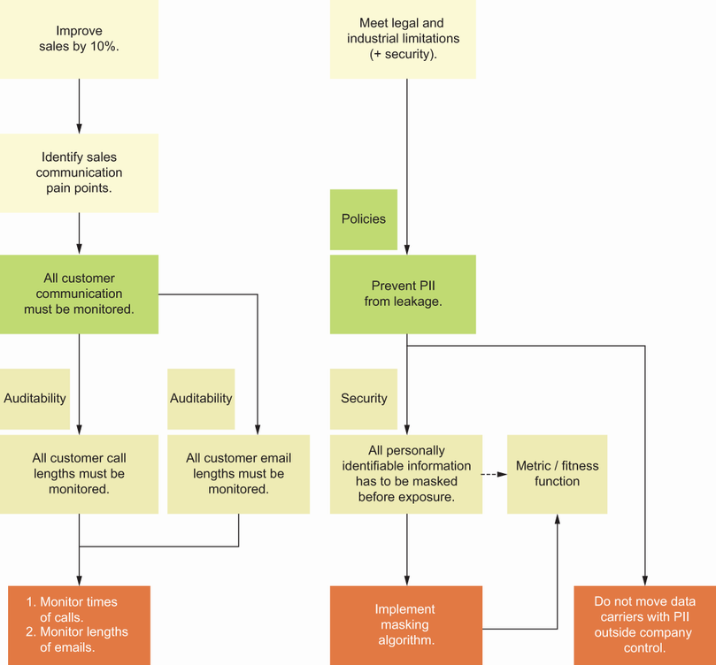
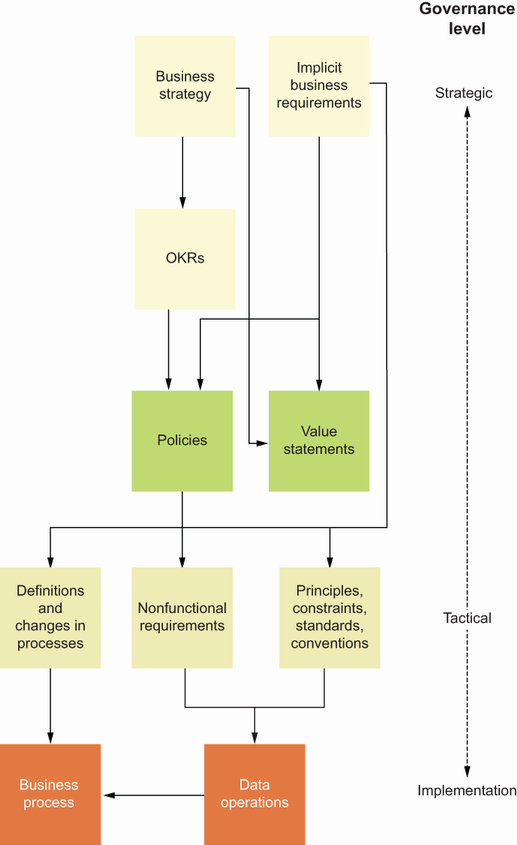
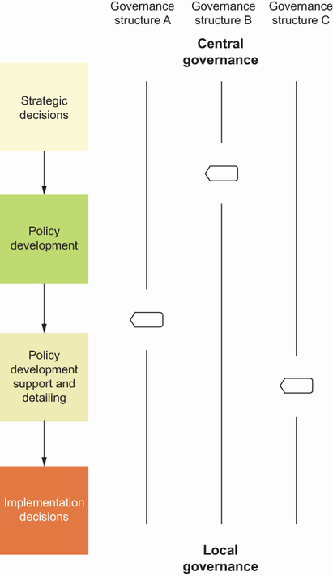
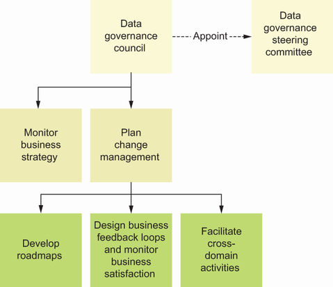
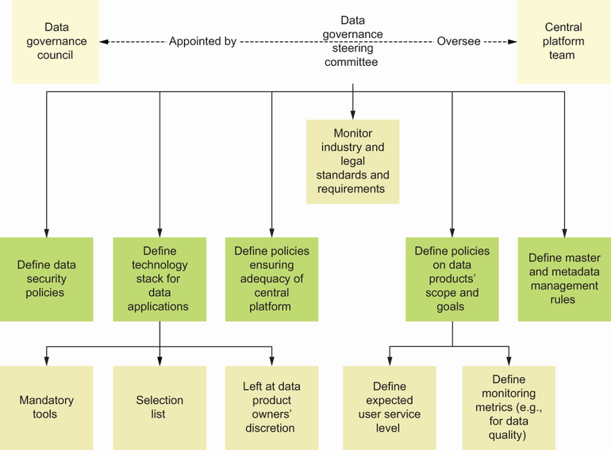
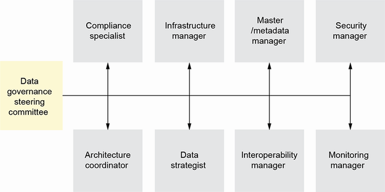
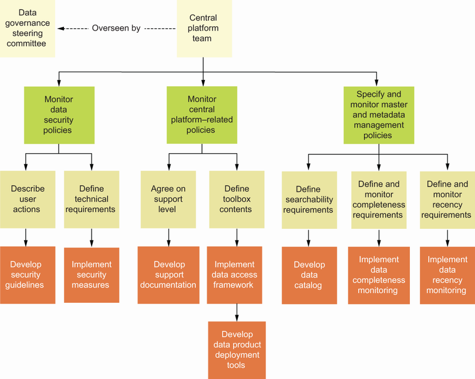
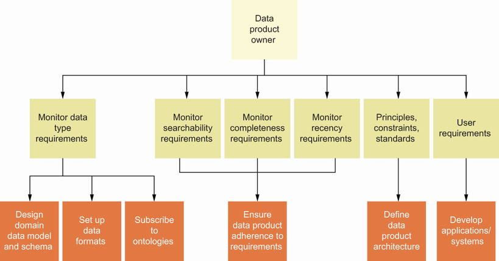

Content Outline
- 1 Foundations of Federated Computational Governance
- 1.1 Why Federation Balances Control and Autonomy
- 1.2 Governance Value in Decision Quality
- 2 Measuring Governance Outcomes
- 2.1 Governance Policies and Decision Rights
- 2.2 Roles of the Central Governance Body
- 3 Domain Responsibilities in Governance
- 3.1 Governance Operating Models
- 3.2 Design Foundations for Computational Governance
- 4 Governance Team Competencies
- 4.1 Policy as Code and Automation Logic
- 4.2 Governance Automation Levels and Adoption Path
1 Foundations of Federated Computational Governance
In data mesh, governance is not a one-time setup but a continuous operating mechanism linked to business outcomes and product evolution.
Its purpose is to combine governance rigor with delivery speed by turning high-level rules into operational practices that scale.
Federated computational governance defines how organizations coordinate data decisions across domains while preserving local execution autonomy.

1.1 Why Federation Balances Control and Autonomy
Federation balances both sides by assigning enterprise-wide guardrails centrally and domain-level decisions locally within those guardrails.
Pure decentralization can accelerate local delivery but frequently fragments standards, accountability, and interoperability across teams.
Pure centralization often fails in heterogeneous domains because central bodies cannot maintain sufficient local context for every decision.

1.2 Governance Value in Decision Quality
With governed metadata, shared terminology, and quality controls, decision-makers gain clearer signals and lower analytical ambiguity.
Without governance, organizations face information overload, ambiguous semantics, and inconsistent assumptions that degrade planning accuracy.
Governance improves decision quality by ensuring that data is interpretable, timely, and fit for the decision context, not only abundant.
2 Measuring Governance Outcomes
A layered model from strategic intent to tactical rules to implementation checks helps convert governance into executable work.
Outcome planning aligns stakeholders on expected value, required controls, and practical delivery constraints before implementation begins.
Governance effectiveness should be measured through explicit outcomes rather than through the volume of policies or meetings.

2.1 Governance Policies and Decision Rights
Value statements support policy coherence by linking governance actions to intended business impact and prioritization criteria.
Decision rights must be explicit so product teams know where they are autonomous and where centralized standards are mandatory.
Policies are the main governance instrument for translating strategic intent into enforceable operating rules.

2.2 Roles of the Central Governance Body
This body should also coordinate expertise for security, compliance, and cross-domain interoperability where economies of scale matter.
Its role is to define minimum common standards and oversee their evolution without absorbing every local implementation decision.
The central governance body is responsible for enterprise-level consistency, regulatory interpretation, and long-term data strategy alignment.
3 Domain Responsibilities in Governance
Effective federation requires local responsibility to be paired with transparent reporting and shared verification mechanisms.
This ownership model moves accountability to execution points where data is produced, transformed, and exposed.
Domain teams own implementation of governance rules within their products, including data quality controls, interface conformance, and policy evidence.

3.1 Governance Operating Models
A practical design uses clear responsibility boundaries by governance layer instead of ad hoc case-by-case negotiations.
The appropriate split depends on organizational scale, risk profile, team maturity, and regulatory exposure.
Governance operating models can be positioned along a spectrum from centralized to decentralized, with federation as a deliberate hybrid.

3.2 Design Foundations for Computational Governance
The design foundation is explicit policy semantics, measurable control objectives, and platform support for automated verification.
This approach reduces manual bottlenecks and improves consistency by enforcing repeatable rules across products and domains.
Computational governance extends federation by translating selected policies into automatable checks and control flows.

4 Governance Team Competencies
Strong collaboration capability is essential because governance quality depends on continuous interaction with domain and platform teams.
Competency coverage should include both policy design and implementation awareness so rules remain realistic and enforceable.
Governance teams need interdisciplinary competence spanning data management, architecture, security, legal constraints, and organizational change.
4.1 Policy as Code and Automation Logic
The key is semantic traceability: automated checks must remain aligned with policy intent as rules and business context evolve.
Not every policy should be fully automated at once; automation depth should follow risk, feasibility, and maturity.
Policy as code converts written governance intent into executable logic that platforms and products can validate automatically.

4.2 Governance Automation Levels and Adoption Path
This incremental approach keeps governance adaptable while steadily increasing scalability, consistency, and auditability.
A maturity path allows organizations to move from advisory controls to partially automated enforcement and then to broader autonomous verification.
Automation should be introduced progressively, starting from high-value checks that remove repetitive manual effort and reduce operational risk.

Key takeaways
- Federated governance balances centralized standards with domain-level autonomy.
- Governance quality must be measured through explicit outcomes and decision accountability.
- Domain teams are responsible for applying governance rules in executable product operations.
- Computational governance scales enforcement by translating policies into automation.
- Incremental automation paths improve consistency without blocking early delivery progress.